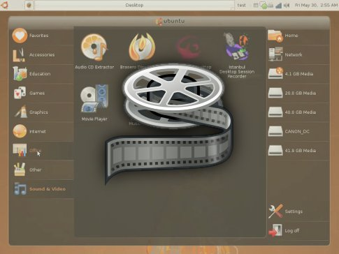

Mostanság már itthon is beindult a netbook biznisz. (Állítólag) kilóra veszik az Asus EeePC-ket, MSI Windeket és az Acer Aspire one-okat különféle konfigurációkban. Alig egy éves ez az új netbook terület, melyet az Intel hódított meg magának az Atom processzorával és a kiöregedő Windows XP-vel. Hirtelen csak az Acer jut eszembe, aki a jó öreg WinXP mellett linuxos megoldást is kínál (Linpus Linux Lite) a netbookja mellé. (Szívesen letesztelném.)
Az Ubuntu feljesztését támogató Canonical Limited még tavasszal jelentette be, hogy új Ubuntu variánsokat kívánnak piacra dobni a mobil, illetve netbook piacok lefedésére. Ez volt az Ubuntu Mobile Edition, amiről azóta kiderült, hogy csak MID-ekre (Mobile Internet Device, mint pl. a Samsung Q1 Ultra) szánt verzió. Aztán jött a nyár és a tajvani Computex kiállítás, ahol Canonicalék bedobták az Ubuntu Netbook Remixet, a kifejezetten netbookokra szánt Ubuntu verziót. Ezt az „új” cuccot fogom, most közelebbről megvizsgálni, hogy az Intrepid Ibex megjelenésével hol tart a Netbook Remix.

Mivel nincs semmilyen netbooknak mondható laptopom, sem pedig szabad PC-m, ezért Virtualbox 2.0.4 virtuális gépen tesztelem a rendszert. A Netbook Remix projekt, ahogy az a Launchpad oldalukról kiderül, egyelőre ott tart, hogy egy újonnan feltelepített Ubuntu 8.04-et, vagy a most már aktuálisabb 8.10-et (Intrepid Ibex), alakítja át a netbookok kisebb kijelzőjéhez talán jobban megfelelő felhasználói felülettel, ezzel könnyítve meg a kisgép kezelését.
Ahogy az imént írtam, a tesztet Vitrualbox 2.0.4-gyel végzem, host rendszerként egy Windows XP-t használva (hardver: Core 2 Duo E6750, valamilyen Asus alaplap :), 2GB DDR2 1066Mhz memória, Asus NVIDIA 8600GT). Az Ubuntu Intrepid Ibexet egy 10GB-os virtuális merevlemezre telepítettem, kapott még 768MB memóriát, illetve 32MB videomemóriát is, hogy örüljön. A virtuális gépre való telepítés folyamatára most nem térek ki (a Virtualbox könnyen, egyszerűen kezelhető), inkább itt van néhány kép, a friss (érintetlen) Intrepidről:


Virtualbox és a friss Ubuntu 8.10 Intrepid Ibex
A következő lépés, hogy Netbook Remix-esítsem az Ubit. Ehhez a launchpad oldalon szereplő utasításokat kell csak követni. Azaz ebből a tárolóból (https://launchpad.net/~netbook-remix-team/+archive/ubuntu/ppa) kell feltenni (és update-elni) mindent. Majd maximus és a netbook-launcher programokat autostartra kell állítani (magyarul a Preferences->Sessions menüben hozzáadni őket), az alsó GNOME panelt teljesen leszedni és a felsőt a következőképpen beállítani: GoHomeApplet|WindowPickerApplet|NotificationArea|MixerApplet|Clock. És elvileg egy újraindítás után már kész is a Remixesített Ubuntu. Én is ezt csináltam. Nézzünk képeket!


A fenti képeken már a Human-Netbook themével ellátott Ubuntu Netbook Remix látható. Bal oldalt, fent látható egy Favorites menü, amibe a legtöbbet használt programokat lehet betenni, így nem kell a menükben keresgélni, hasznos. A Netbook Remix alapból szeretne 3D gyorsítást használni, ezért látható néhány furcsa hiba a képeken. A virtuális gép miatt nincs 3D, ezért itt csak döcögősebbé vált a rendszer, belassult az áttűnésektől és az ikonok 3D-s animációitól (jobb lett volna egy rendes netbookon megnézni). Amúgy könnyedén testreszabható, és nem szabad elfelejteni, hogy ez nem egy lebutított verzió, hanem egy rendes, teljes értékű Ubuntu 8.10.
Gyakorlatilag semmilyen teljesítményadattal vagy akksiidő információval nem szolgálhatok, de abban biztos vagyok, hogy jó irányba halad a fejlesztés. Pláne ha az érintőkijelzős netbookok elterjednek, akkor szerintem igazán hasznos lehet egy ilyen UI az Ubuntuhoz. A kinézeten lehetne még csiszolni…
További leírások itt, itt és itt. Képek itt meg itt. Screencast pedig itt alul (direct link from Canonical). :)

2:30 – mp4 formátum (8MB) – ogg formátum (3MB)


{kind=link}
{kind=link}